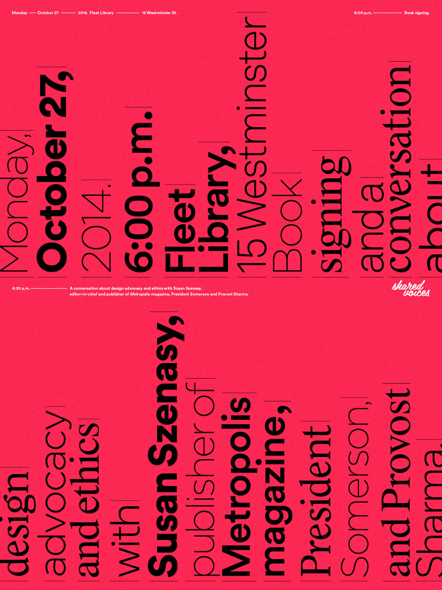

Chloe Scheffe
Graphic design, etc.
Susan Szenasy
Posters
18 x 24" each
2014
Posters for a lecture by Susan Szenasy, editor-in-chief and publisher of
Metropolis
magazine, which was held at RISD's Fleet Library.
Client
RISD Media
Shown at
Final
draft
, RISD Graphic Design Senior Show, Woods-Gerry Gallery, 2015
